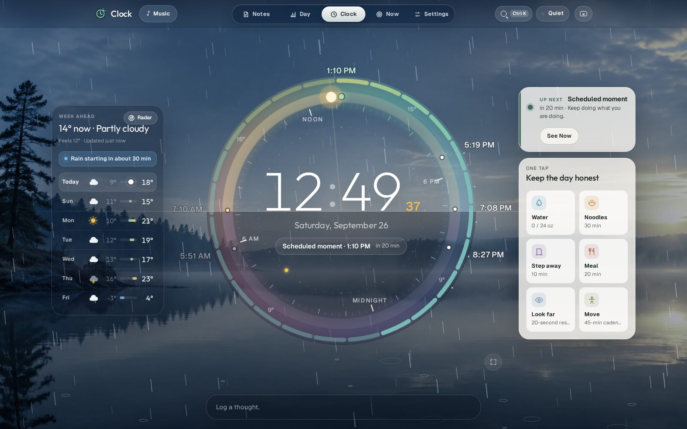
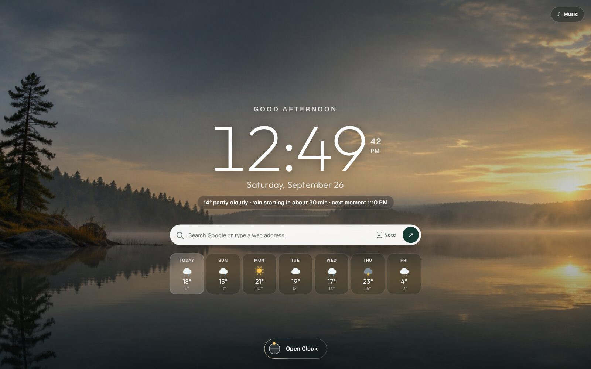
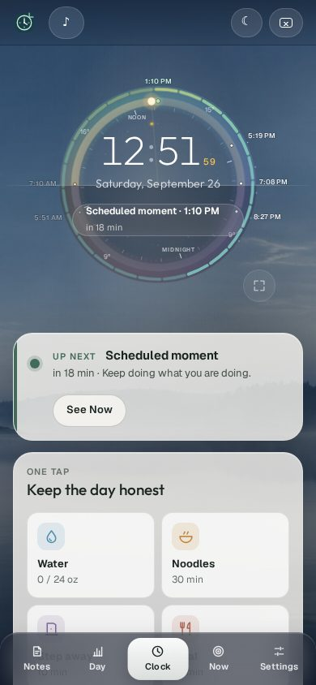

The Horizon Dial
Solar noon at the top, so sunrise and sunset sit on a level horizon. Rings for the hourly temperature, your workday and your moments, with the seconds sweeping round. Hover the sun, the moon or a moment for more.
A 24-hour clock on a living sky. The sun travels a real horizon, the week's weather is a glance away, and the small things that keep a workday honest (water, a distance look, a stretch, your moments) wait quietly until you log them.

Folded around one clock.
Notes above. The day log to the left. Now to the right. Settings below. Every move comes back to the clock.Solar noon at the top, so sunrise and sunset sit on a level horizon. Rings for the hourly temperature, your workday and your moments, with the seconds sweeping round. Hover the sun, the moon or a moment for more.
Your daily photo, graded by where the sun really is. Rain slants with the wind, snow drifts, storms flash, stars come out. A seven-day forecast, hourly detail on hover, and official Environment Canada radar.
Water, a distance look, movement, meals, timers and moments stack quietly. Logging one tells you when the next is due; Later puts just that one away. One system notification, never a pile.
⌘K to jump, log, start a focus block or keep a note. Arrow keys fold the app. Z for a focus view where the dial fills the sky.


Your settings, notes and logs stay in this browser unless you download a backup, connect a live backup file, or set up the optional OneNote copy. Weather and radar are fetched straight from their public sources, and location names never appear on Clock, the start page or the weather sheet.